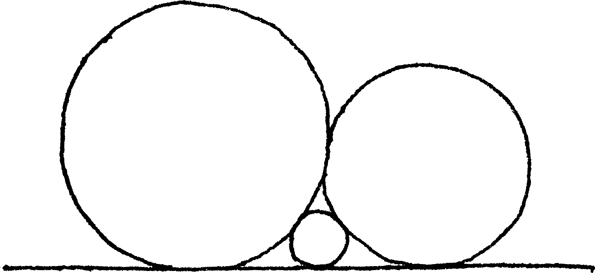
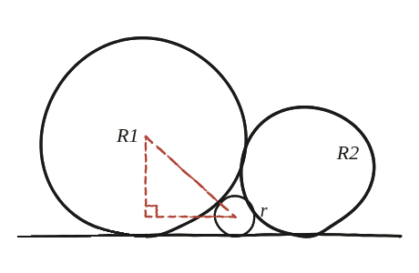

Dues circumferències es troben sobre una línia i es toquen en un punt. S'inscriu una circumferència petita a l'espai entre totes dues. Com depèn el seu radi dels radis de les dues circumferències grans?

Tres parelles, una condició cadascuna
Aquí hi ha tres parelles de cercles tangents entre si i tangents a la mateixa recta: el gran de l'esquerra (R₁) amb el petit (r), el petit (r) amb el gran de la dreta (R₂), i els dos grans (R₁, R₂) entre si. Les tres relacions han de complir-se alhora.
La distància entre peus, reutilitzada
La peça que fa falta no ve de cap qüestió anterior: es construeix aquí, i és de dues línies. Prenguem dos cercles de radis a i b, tots dos tangents a la mateixa recta i tangents entre ells. Els seus centres queden a altura a i b sobre la recta, de manera que la diferència d'altures és (a−b); i com que els dos cercles es toquen, la distància entre els centres és (a+b). Amb Pitàgores sobre aquest triangle rectangle, la distància horitzontal entre els centres —que és també la distància entre els peus, els punts on cada cercle toca la recta— val √((a+b)² − (a−b)²) = √(4ab) = 2√(ab).
Aplicant-ho a la parella (R₁, r): la distància entre els peus d'aquests dos cercles és 2√(R₁r).

El mateix per a l'altra parella
Exactament el mateix argument, aplicat ara a la parella (R₂, r): la distància entre els seus peus és 2√(R₂r).
Els tres peus, sobre la mateixa recta
El peu del cercle petit r queda, per força, entre els peus dels dos cercles grans (és el cercle que hi encaixa a l'espai que deixen). Per tant, la distància completa entre els peus de R₁ i R₂ —que és 2√(R₁R₂), la mateixa fórmula d'abans aplicada a la tercera parella— ha de ser la suma de les altres dues distàncies parcials: 2√(R₁R₂) = 2√(R₁r) + 2√(R₂r).
Aïllar r
Dividint tota l'equació per 2√(R₁R₂r): 1/√r = 1/√R₁ + 1/√R₂. Aïllant r directament: r = R₁R₂/(√R₁+√R₂)².
1/√r = 1/√R₁ + 1/√R₂, o de forma tancada, r = R₁R₂/(√R₁+√R₂)². Surt de la relació 2√(ab) per a la distància entre els peus de dos cercles tangents a la mateixa recta i tangents entre ells —demostrada aquí mateix amb un triangle rectangle de catets (a−b) i 2√(ab) i hipotenusa (a+b)—, aplicada a les tres parelles, i d'imposar que la suma de les dues distàncies parcials sigui la distància completa entre els peus de R₁ i R₂.
Comprovació
Amb R₁=R₂=1: 1/√r=1/√1+1/√1=2, r=1/4. Amb la fórmula tancada: r=1×1/(√1+√1)²=1/4, coincidint.